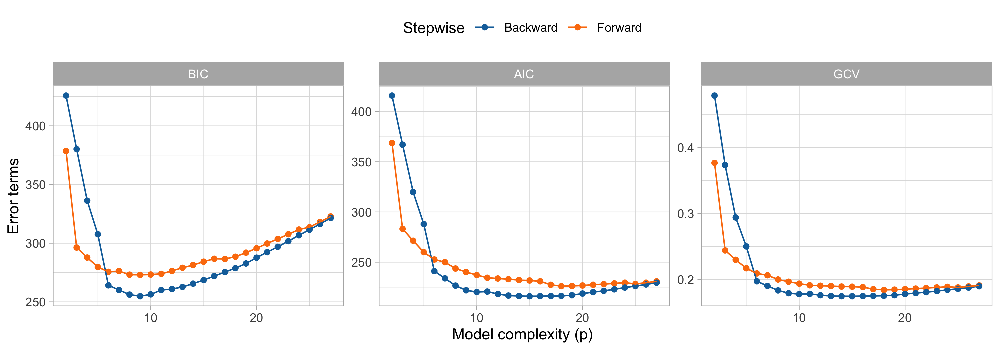
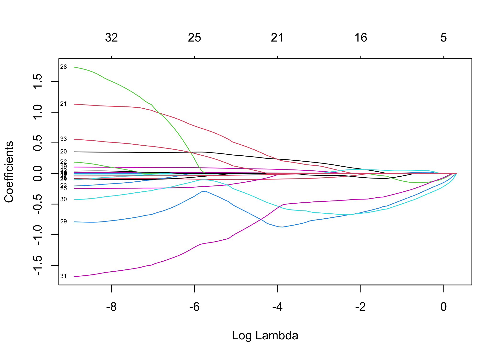

Rows: 263
Columns: 20
$ AtBat <int> 315, 479, 496, 321, 594, 185, 298, 323, 401, 574, 202, 418, …
$ Hits <int> 81, 130, 141, 87, 169, 37, 73, 81, 92, 159, 53, 113, 60, 43,…
$ HmRun <int> 7, 18, 20, 10, 4, 1, 0, 6, 17, 21, 4, 13, 0, 7, 20, 2, 8, 16…
$ Runs <int> 24, 66, 65, 39, 74, 23, 24, 26, 49, 107, 31, 48, 30, 29, 89,…
$ RBI <int> 38, 72, 78, 42, 51, 8, 24, 32, 66, 75, 26, 61, 11, 27, 75, 8…
$ Walks <int> 39, 76, 37, 30, 35, 21, 7, 8, 65, 59, 27, 47, 22, 30, 73, 15…
$ Years <int> 14, 3, 11, 2, 11, 2, 3, 2, 13, 10, 9, 4, 6, 13, 15, 5, 8, 1,…
$ CAtBat <int> 3449, 1624, 5628, 396, 4408, 214, 509, 341, 5206, 4631, 1876…
$ CHits <int> 835, 457, 1575, 101, 1133, 42, 108, 86, 1332, 1300, 467, 392…
$ CHmRun <int> 69, 63, 225, 12, 19, 1, 0, 6, 253, 90, 15, 41, 4, 36, 177, 5…
$ CRuns <int> 321, 224, 828, 48, 501, 30, 41, 32, 784, 702, 192, 205, 309,…
$ CRBI <int> 414, 266, 838, 46, 336, 9, 37, 34, 890, 504, 186, 204, 103, …
$ CWalks <int> 375, 263, 354, 33, 194, 24, 12, 8, 866, 488, 161, 203, 207, …
$ League <fct> N, A, N, N, A, N, A, N, A, A, N, N, A, N, N, A, N, N, A, N, …
$ Division <fct> W, W, E, E, W, E, W, W, E, E, W, E, E, E, W, W, W, E, W, W, …
$ PutOuts <int> 632, 880, 200, 805, 282, 76, 121, 143, 0, 238, 304, 211, 121…
$ Assists <int> 43, 82, 11, 40, 421, 127, 283, 290, 0, 445, 45, 11, 151, 45,…
$ Errors <int> 10, 14, 3, 4, 25, 7, 9, 19, 0, 22, 11, 7, 6, 8, 10, 16, 2, 5…
$ Salary <dbl> 475.000, 480.000, 500.000, 91.500, 750.000, 70.000, 100.000,…
$ NewLeague <fct> N, A, N, N, A, A, A, N, A, A, N, N, A, N, N, A, N, N, N, N, …Methods for model selection
Data Mining - CdL CLAMSES
Homepage

“I never keep a scorecard or the batting averages. I hate statistics. What I got to know, I keep in my head.” Dizzy Dean, baseball player in the ’30s and ’40s.
In this unit we will cover the following topics:
- Best subset regression
- Principal component regression
- Ridge regression
- Lasso, LARS, elastic-net
The common thread among these topics is the so-called variable selection problem.
In other words: what do we do when we have many irrelevant variables?
The running example is about baseball data… but a lot has changed since the ’30s!
The Hitters dataset
We consider the
Hittersdataset, which contains information about n = 263 Major League Baseball players from the 1986 and 1987 seasons.We want to predict the Salary of 1987 of each player, as a function of several covariates:
- number of hits/runs/walks/assists/errors in 1986 and during the whole career;
- number of years in the major leagues;
- The league/division of the player at the end of 1986;
- …and many others.
We considered the logarithmic transform of the salary (
logSalary) and the logarithmic transform of the number of years in major leagues (logYears).Including the intercept, there are in total p = 20 variables that can be used to predict the salary of each player.
The original dataset is available in the
ISLRR package.
A glimpse of the Hitters dataset
Preliminary operations
The variable selection problem
We consider a linear model in which the response variable Y_i (
logSalary) is related to the covariates through the function \mathbb{E}(Y_i) = f(\bm{x}_i; \beta) = \beta_1 x_{i1} + \cdots + \beta_p x_{ip} =\bm{x}_i^T\beta, using the same notation of Unit A.1.Among these p = 26 variables, some are likely to be irrelevant, because they might be correlated or even collinear.
As we have seen in Unit B, irrelevant variables are problematic because they increase the variance of the estimates without important gain in term of bias.
For the polynomial regression problem of Unit B we used cross-validation and other tools to find a good bias-variance trade-off. Can we use the same strategy in this example?
In theory, yes… but here there are 2^{20} = 1048576 competing models!
Correlation matrix of Hitters

Old friends: stepwise regression
Forward regression
Backward regression
Backward and forward regression I

☠️ - The multiple testing problem
Best subset regression I
Best subset regression II

Best subset regression III
Principal components
Principal component analysis
Principal components regression
PCR

PCR beta
Ridge regression
Loading required package: Matrix
Attaching package: 'Matrix'The following objects are masked from 'package:tidyr':
expand, pack, unpackLoaded glmnet 4.1-6
Call: cv.glmnet(x = X, y = y, nfolds = 263, grouped = FALSE, family = "gaussian", alpha = 0)
Measure: Mean-Squared Error
Lambda Index Measure SE Nonzero
min 0.0680 100 0.2073 0.03643 32
1se 0.4797 79 0.2437 0.05334 32

The wrong way of doing cross-validation
Consider a regression problem with a large number of predictors, as may arise, for example, in genomic or proteomic applications.
A typical strategy for analysis might be as follows:
- Screen the predictors: find a subset of “good” predictors that show fairly strong (univariate) correlation with the class labels;
- Using just this subset of predictors, build a regression model;
- Use cross-validation to estimate the unknown tuning parameters (i.e. degree of polynomials) and to estimate the prediction error of the final model.
Is this a correct application of cross-validation?
If your reaction was “this is absolutely wrong!”, it means you correctly understood the principles of cross-validation.
If you though this was an ok-ish idea, please read Section 7.10.2 of HTF (2009).
Lasso, LARS, and elastic-net
Lasso

- asdasd